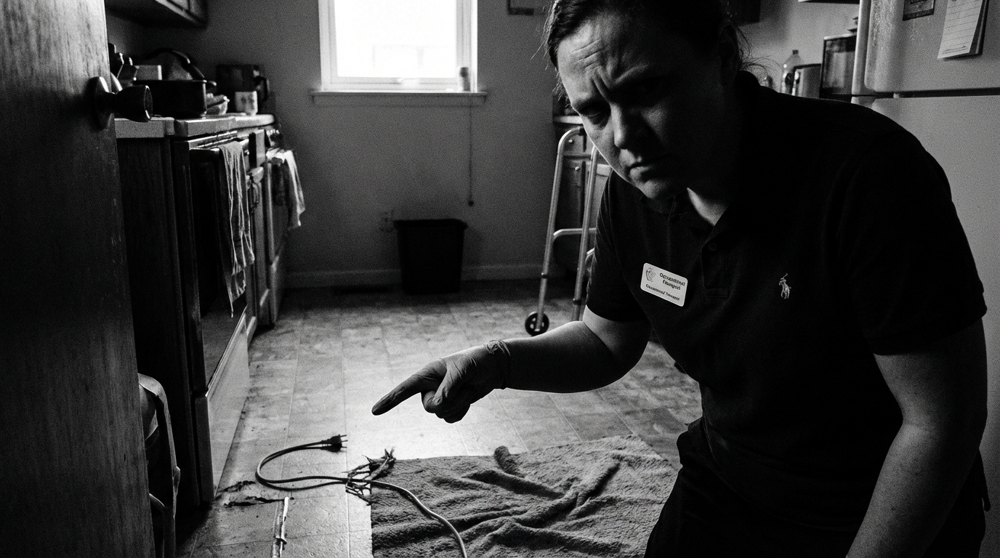
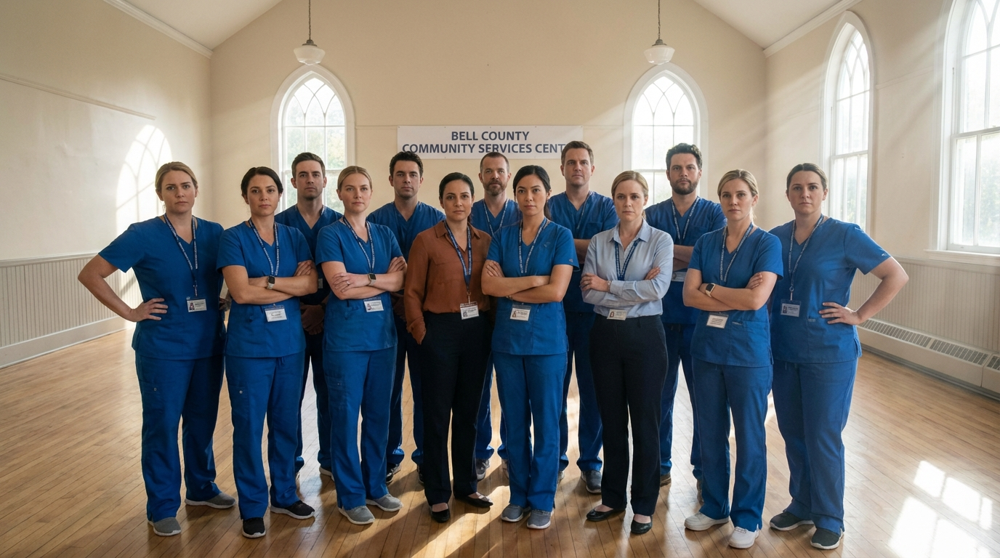
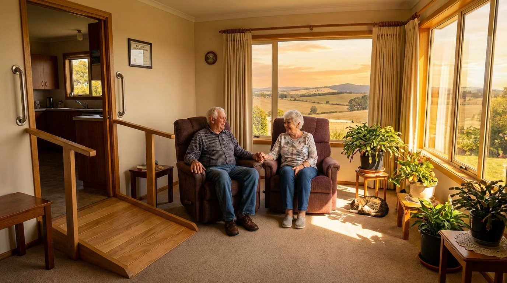

Every 11 seconds
...an older adult is treated in the ER for a fall. Most of them were "safe" until they went home.

In Bell County, we’ve decided that "good enough" isn't a standard anymore. We aren't building an app; we're building a fortress around the people who built our community.
We’ve spent the week on the ground with Bell County’s Occupational Therapists. They told us the truth: They are tired of seeing preventable injuries happen because the system is too slow to react.
By integrating OT expertise with instant AI-driven modifications, we are turning "Aging in Place" from a risky gamble into a standard of care.

In Bell County, your home will remain your sanctuary—not a hazard.
Join the movement
Let's fix the home to save the life.